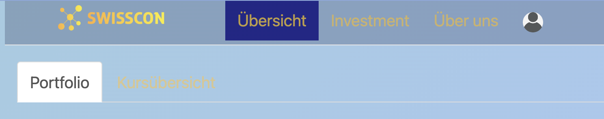
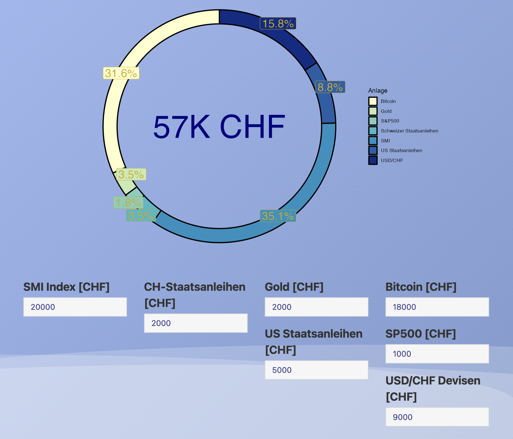
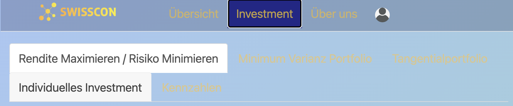
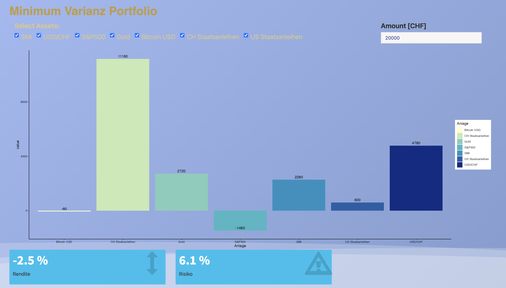
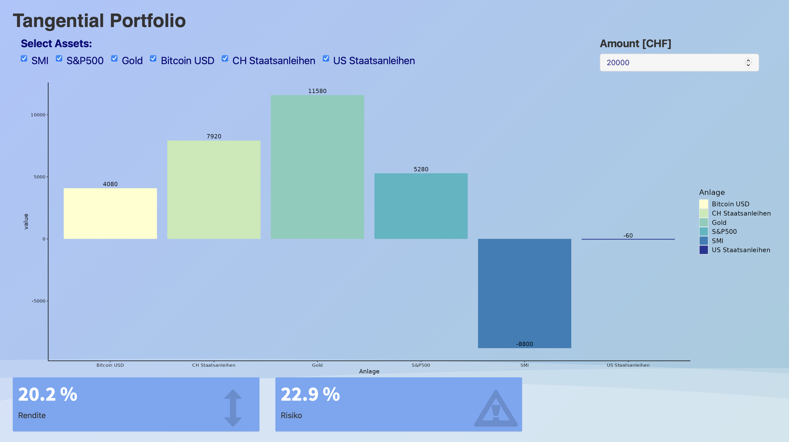
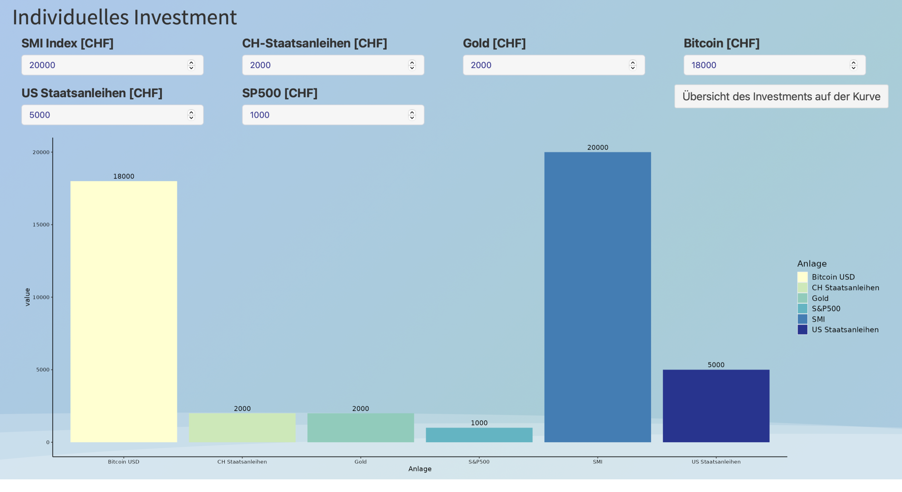

Diese Anleitung wird Ihnen helfen, die Funktionen und Möglichkeiten unserer App zu verstehen.
Auf der Übersichtsseite haben Sie die Möglichkeit, zwischen den Reitern "Portfolio" und "Kursübersicht" zu wählen. Unter "Portfolio" können Sie Ihr derzeitiges Portfolio sehen und ein neues anlegen. Auf der Kursübersicht können Sie die aktuellen Kurse aller verfügbaren Assets einsehen.

Unter "Portfolio" sehen Sie eine Übersicht über Ihr derzeitiges Portfolio und die dazugehörigen Werte. Sie können hier auch ein neues Portfolio anlegen.

Unter "Investment" können Sie zwischen den Optionen "Rendite maximieren / Risiko minimieren", "Minimum Varianz Portfolio", "Tangentialportfolio", "Individuelles Investment" und "Kennzahlen" wählen. Hier können Sie Ihre Investments verwalten und optimieren.

Hier finden Sie Informationen über unsere Geschichte, unser Team und unsere Mission.
Hier finden Sie unsere Kontaktdaten und unseren Standort.
In Ihrem Profil können Sie Ihre persönlichen Informationen einsehen und bearbeiten.
Unter "Rendite Maximieren / Risiko Minimieren" können Sie die Gewichtung Ihrer Assets so anpassen, dass Sie entweder Ihre Rendite maximieren oder Ihr Risiko minimieren können. Hier haben Sie auch die Möglichkeit, zu wählen, ob Sie Shorting zulassen möchten oder nicht.
Unter "Minimum Varianz Portfolio" können Sie ein Portfolio erstellen, das das geringste Gesamtrisiko aufweist. Dies wird erreicht, indem die Gewichtung der Assets so angepasst wird, dass die Varianz des Portfolios minimiert wird.

Unter dem Reiter "Tangentialportfolio" wird Ihnen das Portfolio mit der höchsten erwarteten Rendite pro Einheit Risiko, d.h. mit der höchsten Sharpe-Ratio, angezeigt. Dieses Portfolio wird auch als Tangentialportfolio bezeichnet, da es den Punkt auf der sogenannten Effizienten Grenze darstellt, der tangent an die risikofreie Rate ist.
Wie Sie im Diagramm sehen können, ist die Rendite des Tangentialportfolios höher als die der anderen Portfolios, aber auch das Risiko ist höher. Die genaue Zusammensetzung des Tangentialportfolios in Bezug auf die verschiedenen Assets wird ebenfalls angezeigt.

Unter "Individuelles Investment" können Sie selbst entscheiden, in welche Assets Sie investieren möchten. Sie können die Höhe Ihrer Investments in jedes Asset selbst bestimmen.

Unter "Kennzahlen" finden Sie verschiedene statistische Kennzahlen, die Ihnen dabei helfen können, die Performance Ihres Portfolios zu beurteilen. Folgende Kennzahlen sind verfügbar:
Gewinn (jährlich): Dies ist die durchschnittliche jährliche Rendite Ihres Portfolios.
Risiko (jährlich): Dies ist das jährliche Risiko Ihres Portfolios, gemessen als Standardabweichung der Renditen.
Sharpe Ratio: Dies ist das Verhältnis von Überschussrendite (Rendite über dem risikofreien Zinssatz) zu Risiko. Eine höhere Sharpe Ratio deutet auf eine bessere risikoadjustierte Performance hin.
Sortino Ratio: Dies ist das Verhältnis von Überschussrendite zu Downside-Risiko (Risiko von negativen Renditen). Eine höhere Sortino Ratio deutet auf eine bessere risikoadjustierte Performance hin, wenn nur negative Renditen als Risiko betrachtet werden.
Beta: Dies ist ein Maß für das systematische Risiko Ihres Portfolios. Ein Beta von 1 bedeutet, dass Ihr Portfolio im Durchschnitt genauso stark auf Marktveränderungen reagiert wie der Markt selbst.
Treynor Ratio: Dies ist das Verhältnis von Überschussrendite zu Beta. Eine höhere Treynor Ratio deutet auf eine bessere risikoadjustierte Performance hin, wenn nur das systematische Risiko betrachtet wird.